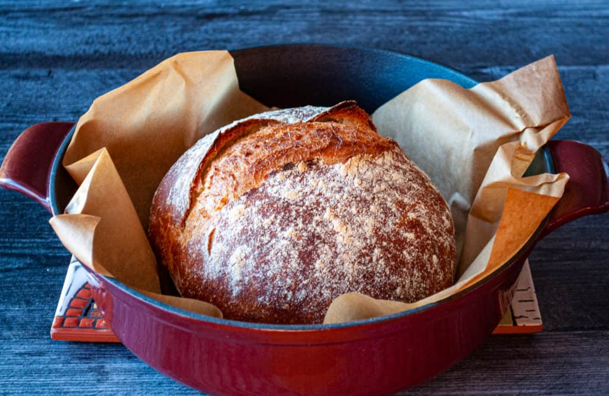

Dutch Oven Bread

Bread fit for a Viking?
This recipe is so easy to make, its prep takes just minutes. Praise the Gods! The secret for this variation of bread
is in the pan, requiring the Dutch type. Looks like we're headed east again for this summer's raids..
In addition to a covered cook in this pan, this dough will be a no-knead loaf, -leaving more time for that last cup of mead.
It starts like most bread recipes, combining flour, yeast, and some salt. Mixed together with warm water (~105 degrees), and you're set
to let it proof for a few hours. One KEY thing for this recipe: cook the dutch pot for 30 mins so it becomes hot. Then when you are ready to put the
dough in, everything is already cooking and going, generating that steam to rise and hit the pot lid and reflect back down. This is how we will get our crispy outisde!
Ingredients
- Flour 7.5 Cups (900g)
- Dry Yeast (active or instant) 1.5 Tablespoons (14g)
- Salt 1 Tablespoon (18g)
- Lukewarm* water 300 Cups (680g)
- Step (1)
The flour/liquid ratio is important in this recipe, so measure carefully. Your best bet is to weigh the flour; or measure it by gently spooning it into a cup, then sweeping off any excess.
- (2)
Combine all of the ingredients in a large mixing bowl, or a large (6-quart), food-safe plastic bucket. For first-timers, "lukewarm" means about 105°F, but don't stress over getting the temperatures exact here. Comfortably warm is fine; "OUCH, that's hot!" is not. Yeast is a living thing; treat it nicely.
- (3)
Mix and stir everything together to make a very sticky, rough dough. If you have a stand mixer, beat at medium speed with the beater blade for 30 to 60 seconds. If you don't have a mixer, just stir-stir-stir with a big spoon or dough whisk until everything is combined.
- (4)
Next, you're going to let the dough rise. If you've made the dough in a plastic bucket, you're all set — just let it stay there, covering the bucket with a lid or plastic wrap; a shower cap actually works well here. If you've made the dough in a bowl that's not at least 6-quart capacity, transfer it to a large bowl; it's going to rise a lot. There's no need to grease the bowl, though you can if you like; it makes it a bit easier to get the dough out when it's time to bake bread.
- (5)
Cover the bowl or bucket, and let the dough rise at room temperature for 2 hours. Then refrigerate it for at least 2 hours, or for up to about 7 days. (If you're pressed for time, skip the room-temperature rise, and stick it right into the fridge). The longer you keep it in the fridge, the tangier it'll get; if you chill it for 7 days, it will taste like sourdough. Over the course of the first day or so, it'll rise, then fall. That's OK; that's what it's supposed to do.
- (6)
When you're ready to make bread, sprinkle the top of the dough with flour; this will make it easier to grab a hunk. Grease your hands, and pull off about 1/4 to 1/3 of the dough — a 400g to 540g piece, if you have a scale. It'll be about the size of a softball, or a large grapefruit.
- (7)
Plop the sticky dough onto a floured work surface, and round it into a ball, or a longer log. Don't fuss around trying to make it perfect; just do the best you can.
- (8)
Place the loaf on a piece of parchment (if you're going to use a baking stone); or onto a lightly greased or parchment-lined baking sheet. Sift a light coating of flour over the top; this will help keep the bread moist as it rests before baking. Drape the bread with greased plastic wrap, or cover it with a reusable cover.
- (9)
Let the loaf warm to room temperature and rise; this should take about 60 minutes (or longer, up to a couple of hours, if your house is cool). It won't appear to rise upwards that much; rather, it'll seem to settle and expand. Preheat your oven to 450°F while the loaf rests. If you're using a baking stone, position it on a middle rack while the oven preheats. Place a shallow metal or cast iron pan (not glass, Pyrex, or ceramic) on the lowest oven rack, and have 1 cup of hot water ready to go.
- (10)
When you're ready to bake, take a sharp knife and slash the bread 2 or 3 times, making a cut about 1/2" deep. The bread may deflate a bit; that's OK, it'll pick right up in the hot oven.
- (11)
Place the bread in the oven — onto the baking stone, if you're using one, or simply onto a middle rack, if it's on a pan — and carefully pour the 1 cup hot water into the shallow pan on the rack beneath. It'll bubble and steam; close the oven door quickly.
- (12)
Bake the bread for 25 to 35 minutes, until it's a deep, golden brown.
- (13)
Remove the bread from the oven, and cool it on a rack.
- (14)
Store leftover bread in a plastic bag at room temperature.